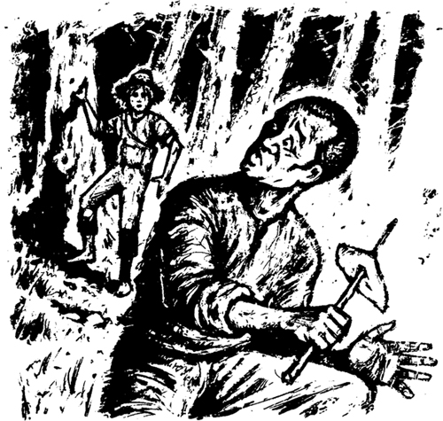
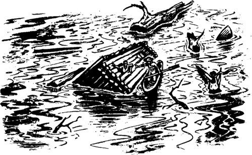
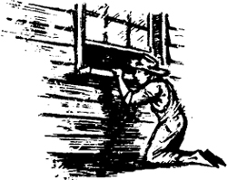

3

Hai kẻ chạy trốn
Đảo Jackson nằm trên Sông Mississippi, cách St Petersburg khoảng ba dặm về phía nam. Ông Twain đã viết về hòn đảo này trong tác phẩm của mình. Hai năm trước, Tom, tôi và người bạn Joe Harper đã sống ở đó vài ngày. Chúng tôi muốn trở thành cướp biển. Nhưng sau vài ngày, chúng tôi phải quay trở lại thị trấn. Lần này, tôi không muốn trở thành cướp biển. Và tôi không muốn quay về thị trấn! Đảo này có nhiều nơi ẩn nấp lý tưởng. Tôi đã trốn khỏi cha và muốn trốn trên đảo cho đến đêm hôm sau. Sau đó, tôi muốn xuôi dòng sông. Tôi muốn ra đi thật xa khỏi St Petersburg.
Tôi đến hòn đảo và giấu chiếc xuồng dưới những tán cây. Tôi đói dữ dội nhưng không mang theo thức ăn nào. Tôi ngủ gật trong vài giờ.
Buổi tối, tôi tỉnh giấc. Đột nhiên, tôi thấy sợ hãi. Trời tối và có mùi thức ăn. Có ai đó đang nấu ăn gần đây! Tôi nhìn thấy ánh sáng le lói qua kẽ lá. Đó là ánh sáng từ đống lửa. Liệu cha tôi có đến đảo? Ông ấy có đang tìm kiếm tôi không?
Tôi bước thật cẩn thận về phía ngọn lửa. Sau đó, nỗi sợ hãi của tôi biến mất. Có ai đó trên Đảo Jackson. Nhưng đó không phải cha tôi. Đó là Jim, nô lệ của Cô Watson. Jim là bạn của tôi.
Tôi gọi với anh ta một cách khẽ khàng.
‘Jim, cậu đang làm gì ở đây?’ Tôi hỏi.
Jim quay lại đột ngột. Anh ta còn sợ hơn

‘Huck!’ Anh ta nói. ‘Huck, làm ơn đừng kể chuyện của tớ với bất kỳ ai. Tớ đã bỏ trốn.’
‘Cậu bỏ trốn khỏi Cô Watson, Jim à?’ Tôi hỏi. ‘Tại sao? Cô ấy đọc Kinh thánh suốt ngày nhưng không phải là một người xấu.’
‘Cô ấy định bán tớ, Huck ạ,’ Jim đáp. ‘Cô ấy định bán tớ cho một kẻ buôn nô lệ từ New Orleans. Sáng nay tớ đã nghe họ nói về tớ. Người đàn ông đó nói, "Tôi sẽ trả cô 800 đô la cho nô lệ của cô!" Nhưng tớ không muốn đến New Orleans, Huck ạ. Những người nô lệ ở đó có cuộc sống rất khổ sở.’
‘Cậu đã làm gì, Jim?’ Tôi hỏi anh ta.
‘Tớ đợi đến tối,’ Jim nói. ‘Sau đó tớ lấy ít thức ăn trong bếp và bỏ trốn. Tớ tìm thấy một chiếc xuồng và đã đến đây. Ngày mai, những người đàn ông da trắng trong thị trấn sẽ tìm kiếm tớ. Làm ơn đừng chỉ cho họ chỗ tớ ẩn nấp, Huck ạ.’
‘Đừng lo, Jim,’ tôi nói. ‘Tớ sẽ không quay lại St Petersburg.’ Sau đó, tôi kể cho Jim nghe về cha tôi.
‘Tớ rất tiếc về rắc rối của cậu, Huck,’ anh ta nói. ‘Ngồi xuống và ăn ít thức ăn này đi.’
Tôi rất quý Jim. Anh ta là một người tốt. Anh ta luôn nói thật và tin tưởng mọi người. Mọi người thường nói dối anh ta, nhưng anh ta luôn tin họ. Anh ta rất tốt bụng. Tôi muốn ở lại cùng anh ta vài ngày.
‘Jim, cả hai chúng ta đều là những kẻ bỏ trốn,’ tôi nói. ‘Nhưng chúng ta sẽ đi đâu?’
‘Chúng ta phải đi về phía nam, xuôi dòng sông, Huck,’ Jim nói. ‘Tớ đã bỏ trốn và giờ Cô Watson sẽ không thể lấy được 800 đô la từ tay kẻ buôn nô lệ. Cô ấy sẽ cố tìm tớ. Cô ấy sẽ trả tiền thưởng cho người bắt được tớ. Những người đàn ông da trắng sẽ tìm kiếm tớ trên bờ Missouri và những người đàn ông da trắng sẽ tìm kiếm tớ trên bờ Illinois. Chúng ta không được đi bộ trên đất liền. Chúng ta phải đóng một chiếc bè, Huck. Chúng ta phải xuôi dòng sông và phải sống trên sông. Nhưng chúng ta phải đi trong bóng tối và phải trốn vào ban ngày.’
‘Nhưng chúng ta sẽ đi đâu?’ Tôi lại hỏi anh ta.
‘Ở một số tiểu bang trong đất nước này, người ta không sở hữu nô lệ, Huck,’ Jim trả lời. ‘Tớ muốn đến một trong những tiểu bang đó – những tiểu bang tự do.’
Tôi suy nghĩ về những lời của Jim trong một phút.
‘Nhưng hầu hết những tiểu bang tự do đó đều nằm ở phía bắc đất nước, Jim,’ tôi nói. ‘Tại sao cậu lại muốn đi về phía nam, xuôi dòng sông?’
‘Sông Mississippi rất mạnh, Huck,’ Jim trả lời. ‘Chúng ta phải đi về phía nam. Dòng chảy sẽ đưa chúng ta về phía nam. Chúng ta sẽ trôi dạt xuống sông Mississippi – chúng ta sẽ không phải chèo bè. Nhưng chúng ta không thể đi về phía bắc trên sông. Chúng ta không đủ sức. Dòng chảy của sông mạnh hơn chúng ta!’
‘Chúng ta sẽ đi về phía nam, Huck,’ Jim nói. ‘Và trong vài ngày nữa, chúng ta sẽ đến Cairo, ở bờ phía đông. Sông Ohio hợp lưu với Sông Mississippi tại đó. Sau đó, tớ sẽ lên một chiếc tàu hơi nước. Những con tàu đi ngược lên Sông Ohio từ Cairo. Chúng đi đến những tiểu bang tự do.’
Tôi đồng ý với kế hoạch của Jim.
‘Ngày mai chúng ta sẽ đóng một chiếc bè, Jim,’ tôi nói.
Chúng tôi không cần phải đóng bè. Sáng hôm sau, chúng tôi nhìn thấy một chiếc bè trôi trên sông. Không có ai trên đó. Chúng tôi chèo xuồng ra và kéo bè vào đảo. Đó là một chiếc bè tốt và chắc chắn – dài khoảng mười sáu feet và rộng mười hai feet. Nhanh chóng, chúng tôi dựng một túp lều gỗ nhỏ trên đó. Chúng tôi giấu chiếc bè dưới những tán cây cùng với chiếc xuồng của Jim. Sau đó, chúng tôi tìm thấy một cây sào dài.
‘Chúng ta sẽ dùng cây sào này để lái bè, Jim,’ tôi nói. ‘Tối nay chúng ta sẽ bắt đầu chuyến hành trình.’
Nhưng chúng tôi không thể bắt đầu đi vào đêm đó. Buổi chiều, sông bắt đầu ngập lụt!
Đã có những trận mưa lớn ở phía bắc đất nước. Có rất nhiều nước trên sông. Buổi chiều hôm đó, mực nước sông ngày càng dâng cao. Sông chảy rất xiết. Không lâu sau, nó ngập cả hai bờ và bắt đầu tràn vào Đảo Jackson. Chúng tôi phải chuyển đến một nơi cao ở giữa đảo.
‘Tớ muốn vào trong ngôi nhà đó xem, Huck,’ Jim nói.
Chúng tôi nhanh chóng chèo xuồng ra ngôi nhà và Jim trèo lên tòa nhà. Tôi ở lại trong xuồng và bám vào ngôi nhà đang trôi. Jim chui vào nhà qua một cửa sổ.

Sau vài phút, Jim ra khỏi cửa sổ.
‘Tớ đã tìm thấy một ít thức ăn và tiền, Huck,’ anh ta nói.
‘Tớ cũng muốn vào đó, Jim,’ tôi nói.
‘Không, Huck!’ Jim nhanh chóng nói. ‘Đừng vào đó. Có một người đàn ông chết ở bên trong. Có ai đó đã bắn chết anh ta!’
‘Tớ đã nhìn thấy nhiều người chết, Jim,’ tôi nói.
Đột nhiên, có những giọt nước mắt trong đôi mắt của Jim.
‘Làm ơn, Huck,’ anh ta nói. ‘Nghe tớ nói này. Cậu không được vào đó. Làm ơn hãy tin tớ.’
Đến cuối buổi chiều, sông chảy chậm hơn. Lúc hoàng hôn, bầu trời bắt đầu tối dần.
‘Chờ ở đây, Jim,’ tôi nói. ‘Tớ sẽ đến St Petersburg. Tớ sẽ cố gắng tìm hiểu tin tức.’
Tôi nhanh chóng chèo xuồng đến thị trấn. Sau đó, tôi lắng nghe qua cửa sổ của mọi người. Tôi nghe thấy mọi người nói chuyện.
Cha tôi đã nói với mọi người về sự mất tích của tôi. Nhưng nhiều người không tin câu chuyện của ông ấy. ‘Ông ta đã giết con trai mình,’ họ nói. ‘Ông ta muốn lấy tiền của Huckleberry. Giờ ông ta đã giết chết cậu bé.’

Và ngay sau đó, cha tôi cũng mất tích. Không còn ai tìm kiếm tôi nữa. Nhưng có một số tin tức xấu. Cô Watson muốn trả tiền thưởng cho Jim. Nhiều người đàn ông đang tìm kiếm anh ta. Và chiều hôm đó, có người đã tìm kiếm bờ sông, phía nam thị trấn. Họ đã nhìn thấy khói bốc lên từ Đảo Jackson. Đó là khói từ đống lửa của chúng tôi!
Danh mục
- Tiêu đề
- Mục lục
- Lưu ý về tác giả
- Lưu ý về câu chuyện
- Các nhân vật trong câu chuyện
- 1. Nhà văn không biết hết mọi thứ!
- 2. Ngôi nhà gỗ trong rừng
- 3. Hai kẻ trốn chạy
- 4. Trên bè
- 5. Quyết định
- 6. Nhà vua và công tước
- 7. Những kẻ lừa đảo lòng tin
- 8. Chiếc quan tài
- 9. Thêm nhiều anh em!
- 10. Tom Sawyer
- Bản quyền